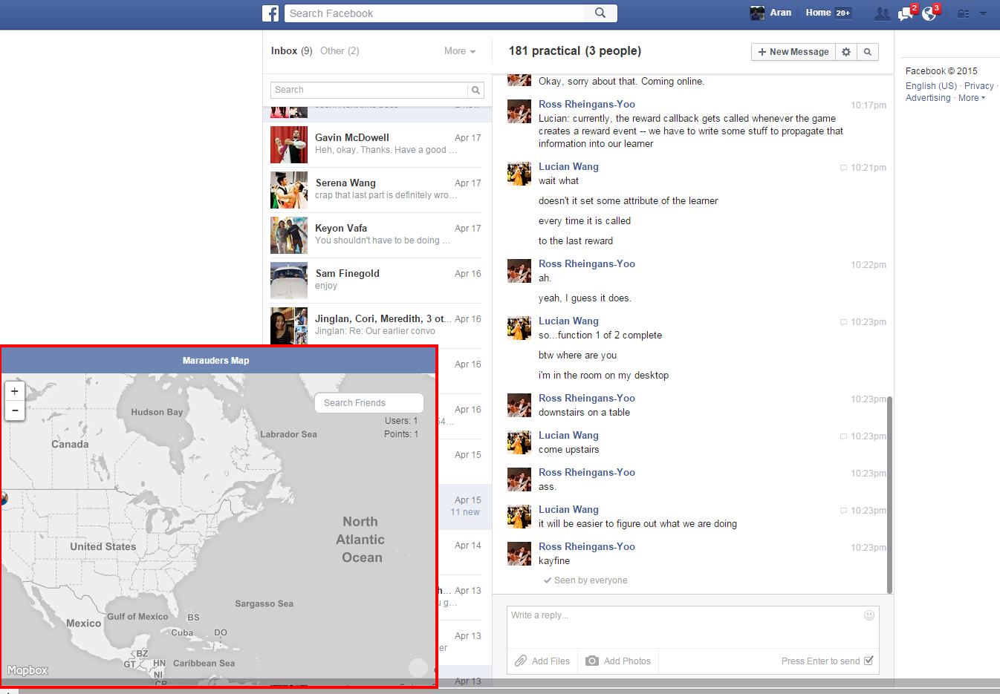
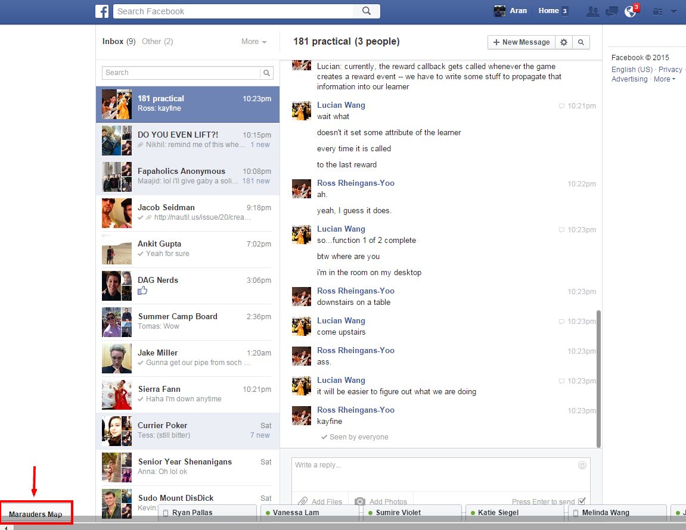
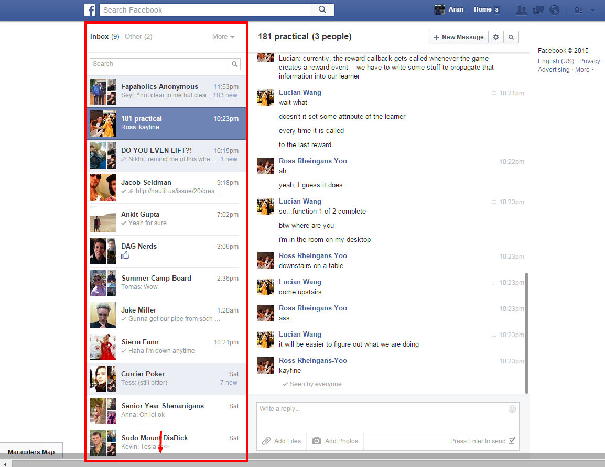
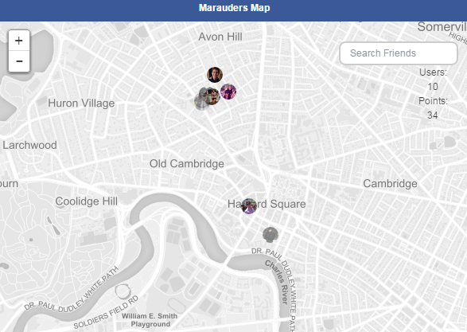
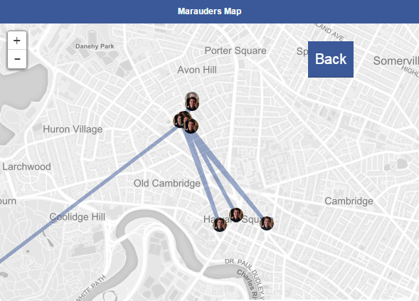
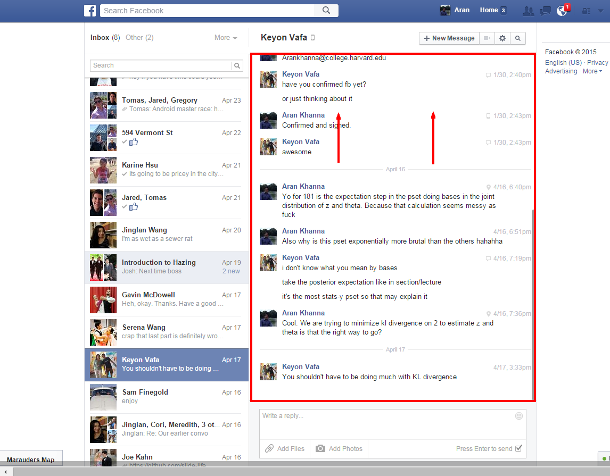

This extension gives you access to a magical map that can track the recent as well as past locations of your facebook acquaintences with up to a meter of accuracy. Read about finding and using the map here or go ahead and open it if you swear you are up to no good...
This was written in conjuction with this blog post to demonstrate how Facebook messenger sending users' location by default allows you to roughly track people you chat with.
To access the map you must be logged into Facebook (with this extension enabled). You must then go to https://www.facebook.com/messages/ and be in a fully expanded browser window. The map tab should pop up in the bottom left of the screen.
To close the map click the blue bar above the map and it will minimize to a tab in the bottom left which can be clicked to re-open the map.
To pull the most recent location data of a Facebook user onto the map you have to be on https://www.facebook.com/messages/ and click on any conversation (indavidual or group) in the list on the left with that user in it.
Any message sent from that user with a location attached is added to the map.
Bubbles on the map represent the most recent location for each user, and clicking on a user's bubble brings up all past location points recorded for that user.
To pull more past location data of a Facebook user onto the map scroll up in any conversation with that user in it.
Caution: When you reload the webpage with the map, all the data gathered on the map is erased (Why?).
This extension was developed as a demonstration not an actual tool to creep on your Facebook acquaintences. Hence it is not super polished nor optimized to gather/store large amounts of data on acquaintences (even though you can imagine using it to do so). Read this Medium post for more a detailed discussion about what motivated the creation of this extension.